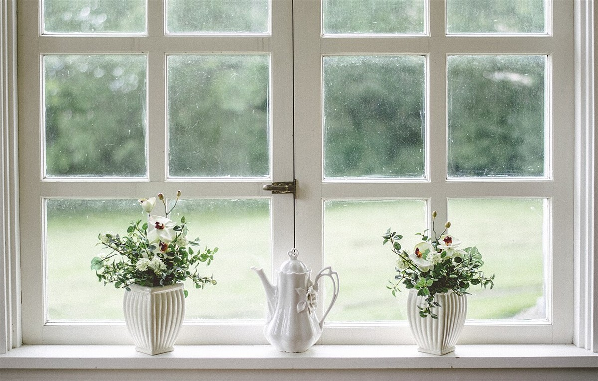
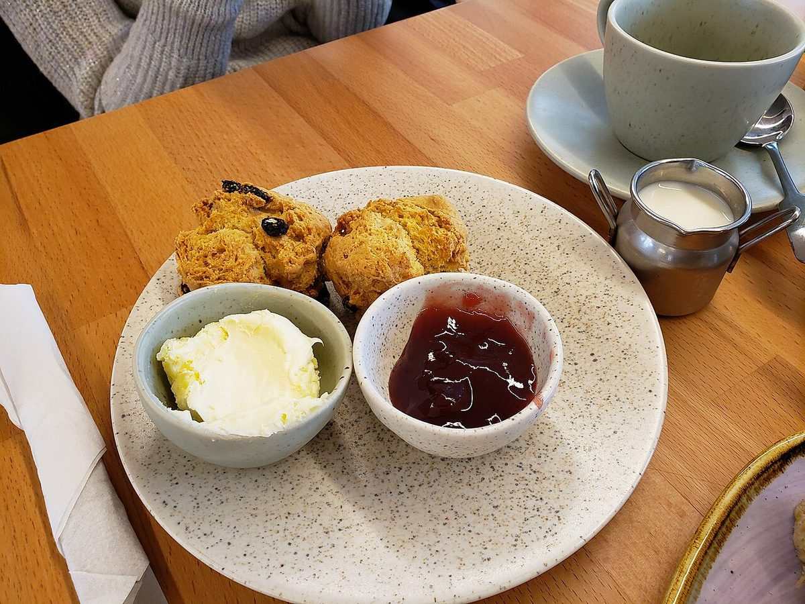
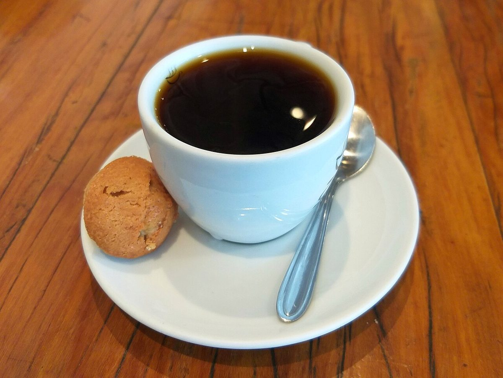
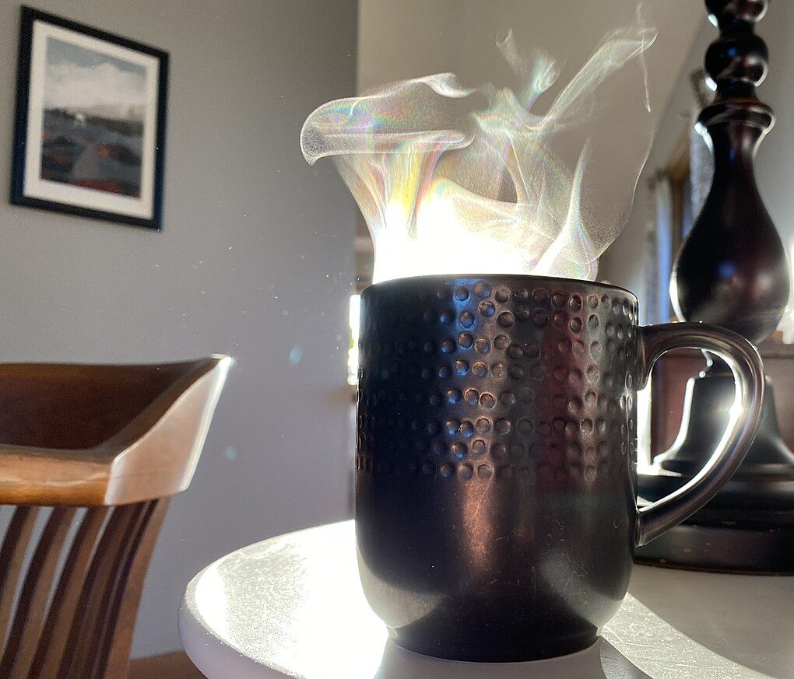

古民家カフェ / 大阪府茨木市大手町
マトカ
路地裏の古い家で、ひと息の小さな旅を。
店名はフィンランド語で「旅」。築100年の古民家で、コーヒーとおやつをどうぞ。

ABOUT
お店のこと
「マトカ」は、フィンランド語で「旅」を意味する店名です。旅と古道具が好きな店主が、車通りから一本入った路地裏の一軒家に一目惚れしたことが、お店のはじまりと紹介されています。
建物は築100年の古民家。もとの梁や建具を生かし、内装は店主ご自身が手がけたそうです。店内にはヴィンテージの椅子が並びます。店主は「このカフェ自体が私にとって旅のようなもの」と語っています。
阪急茨木市駅から歩いて数分。大通りから少し入るだけで、時間の流れが変わる場所です。
写真はフリー素材のイメージで、店舗の実際の様子ではありません。

MENU
メニュー
紹介記事などでは、次のようなメニューが伝えられています。最新の内容・価格はInstagramでご確認ください。
| 営業時間 | 準備中 |
|---|---|
| 定休日 | 準備中 |
| 電話 | 準備中 |




VOICE
口コミ(イメージ例)
以下は制作側が作成したイメージ例です。実在のお客様の声ではありません。
イメージ例
路地を曲がると、ふっと静かになる。古い建具の残る部屋で、のんびりコーヒーを飲みたくなる、そんなお店になりそうです。
イメージ例
プリンとコーヒーを頼んで、窓の外を眺めて過ごす。ちょっとした小旅行の気分を味わえそう、という声が想像できます。
イメージ例
椅子や小物を見ているだけでも楽しい。ゆっくり本を読みながら、長居してしまいそうな空間です。


ACCESS
アクセス
| 所在地 | 〒567-0883 大阪府茨木市大手町2-6 |
|---|---|
| 電話 | 準備中 |
| 営業時間・定休日 | 準備中 |
| @matka.22 |


PHOTO CREDITS
写真クレジット
掲載写真はすべてフリー素材のイメージで、店舗の実際の様子・商品ではありません。
- images/mug-steam.jpg | Coffee steaming in a mug | 作者: PedanticNarrativeController | CC0 1.0 | 撮影地: 不明または国外
- images/drip-cup.jpg | drip-cup(Wikimedia Commons掲載のコーヒー写真) | 作者: Melsj | CC BY-SA 4.0 | 撮影地: 不明または国外
- images/mug-books.jpg | 08_white_mug_on_books_window | 作者: Shixart1985 | CC BY 2.0 | 撮影地: 不明または国外
- images/window-teapot.jpg | Porcelain teapot on windowsill (Unsplash) | 作者: Nathan Fertig | CC0 1.0 | 撮影地: 不明または国外
- images/lamp.jpg | Floor lamp near a wall (Unsplash) | 作者: David van Dijk | CC0 1.0 | 撮影地: 不明または国外
- images/scones.jpg | Classic cream tea - Nymans Garden Riding House | 作者: Andy Li | CC0 1.0 | 撮影地: 不明または国外
- images/oldbooks.jpg | Antique books and encyclopedias (Unsplash) | 作者: Annie Spratt | CC0 1.0 | 撮影地: 不明または国外
- images/bookshelf.jpg | Old bookshelf (Unsplash) | 作者: Simson Petrol | CC0 1.0 | 撮影地: 不明または国外
- images/beans-1.jpg | A lot of coffee beans | 作者: www.Pixel.la Free Stock Photos | CC0 1.0 | 撮影地: 不明または国外
- images/beans-2.jpg | Beans (42182293175) | 作者: Skitterphoto | CC0 1.0 | 撮影地: 不明または国外
- images/beans-3.jpg | Coffee Beans | 作者: fireskystudios.com | CC0 1.0 | 撮影地: 不明または国外
- images/beans-4.jpg | Coffee Beans Texture | 作者: megforce1 | CC0 1.0 | 撮影地: 不明または国外